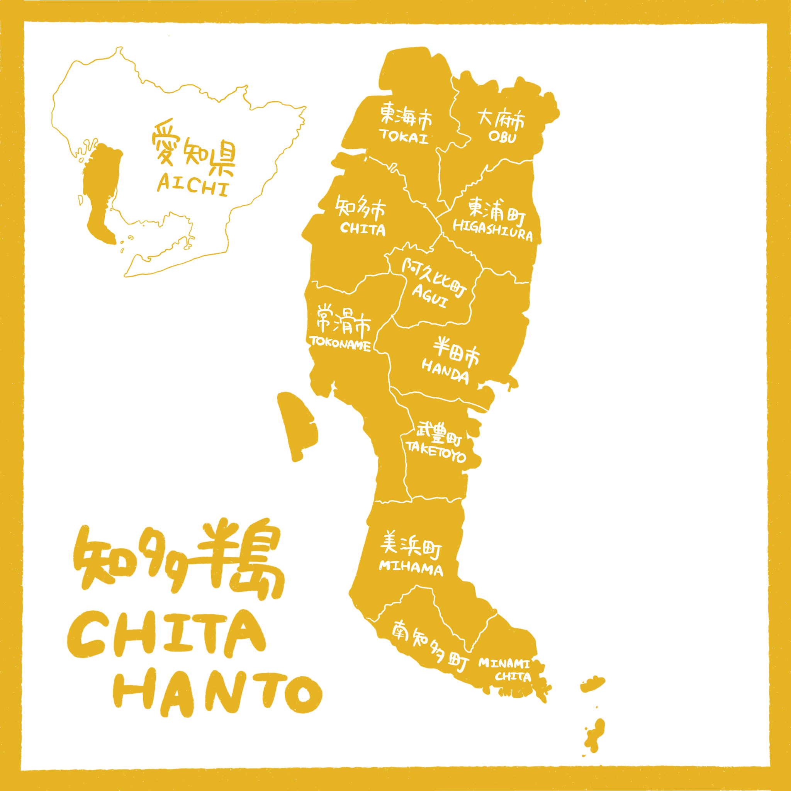

この土地から、
次の産業を。
知多半島・南知多町で、サトウキビを育て、
サトウキビ酒づくりを目指しています。

※画像はイメージです。商品は現在開発中で、販売はしていません。
愛知県知多半島
伊勢湾と三河湾に抱かれた愛知県知多半島。温暖な気候と豊かな地形に恵まれながら、 いま静かに、しかし確実に進行する構造的な課題に直面しています。

愛知県知多半島 ｜ 5市5町（東海市・大府市・知多市・常滑市・半田市／東浦町・阿久比町・武豊町・美浜町・南知多町）
知多半島は、かつての酒どころ。
江戸の頃、知多半島には二百を超える酒蔵が並んでいました。半島で醸された酒は廻船に積まれ、江戸の町へと運ばれていきました。その酒造りは、いまもこの半島の蔵に受け継がれています。
この酒どころに、新しい一滴を。わたしたちが選んだのは、サトウキビです。
※統計は各出典元の公表資料に基づきます。数値は今後の公表資料により更新される場合があります。
※酒蔵の数は、公益財団法人 招鶴亭文庫の資料（19世紀の最盛期）によります。
わたしたちが向き合う３つの社会課題
知多半島、そして南知多町が抱える課題は、互いに絡み合っています。
耕作放棄地の活用
担い手を失った農地が年々増加し、地域の資源として活かしきれていません。
雇用機会の創出
地域には一次産業以外の雇用の場が乏しく、若い世代の流出に歯止めがかかりません。全国では約146万人がひきこもりの状態にあるとされ、働きたくても、いまの働き方に自分を合わせられない人がいます。
内閣府「こども・若者の意識と生活に関する調査」（2023年）消滅可能性都市
若年女性人口の急減により、地域そのものの存続が危ぶまれています。
この３つの課題は、それぞれ単独では解決できません。耕作放棄地に、新しい産業と雇用を宿すこと。それが、知多半島の未来を耕す一歩になると考えています。
挑戦
耕作放棄地の活用、雇用機会の創出、消滅可能性都市——この３つの課題すべてにアプローチするプロジェクトを、
私たちは、知多半島から始動します。
大切にすること
地域の未来のためになる方へ。
信頼を、壱歩ずつ積み重ねる。
サトウキビ酒
「合わせる酒」
耕作放棄地で育てたサトウキビから、お酒をつくることを目指しています。
醸造してつくるシュガーワインと、蒸留してつくるラム。
この二つを、わたしたちは「サトウキビ酒」と呼んでいます。
お酒に人が合わせるのではなく、
お酒が人に合わせる。
- 食材に合わせる
- 酵母に合わせる
- 割り方に合わせる
- 人に合わせる
- 土地に合わせる
料理や飲む人、その日の場面に合わせてつくり分けられる、知多半島ならではのお酒を目指します。
人が仕事に合わせるのではなく、仕事を人に合わせる。
その日できることを、できる人が、できるぶんだけ。働き方を人に合わせながら、荒れた畑を拓き、サトウキビを育て、酒を醸していきます。
働く人に合わせ、飲む人に合わせる。
それが、わたしたちの「合わせる酒」です。
※現在、酒類製造免許の取得に向けて準備中です。お酒の製造・販売はまだ行っていません。
わたしたちのやること
まだ準備の段階だからこそ、これから何をやるのかを明確にします。
畑から一杯になるまでを、知多半島の中でつくります。
サトウキビを育てる
担い手を失った耕作放棄地をお借りして、サトウキビを育てます。はじめの壱歩は、南知多町の約128坪の小さな畑から。地域の生産者と対話を重ねながら、畑を一枚ずつ取り戻していきます。
サトウキビ酒をつくる
酒類製造免許の取得を目指し、育てたサトウキビからシュガーワインとラムをつくる体制を整えます。畑からお酒までを、地域の新しい仕事にします。
土地と暮らしを手入れする
放置された竹林や森の整備、空き家の改修、学びの場づくりなど、お酒づくりと一緒に、地域の資源を少しずつ活かしていきます。
一緒に関わる
サトウキビが育ち、一杯のお酒になるまで。
その歩みを、一緒に見届けてください。
畑に来る
畑の手伝いや収穫など、関わっていただける機会を準備しています。決まり次第お知らせします。
お知らせ
株式会社知多壱を設立予定です。
AICHI STARTUP BATTLE 2026 のアクセラレーションステージに参加しています。
会社概要
株式会社知多壱は、知多半島の一次産業に新たな産業と雇用を生み出す事業体として、現在設立の準備を進めている段階です。 正式な法人登記に先立ち、事業計画の検討状況を公開しています。
| 会社名 | 株式会社知多壱（設立準備中）設立前 |
|---|---|
| 設立 | 2026年11月（予定） |
| 事業内容 | サトウキビの栽培、サトウキビ酒（シュガーワイン・ラム）の製造（酒類製造免許の取得に向けて準備中）、耕作放棄地・竹林・空き家の活用 ほか |
| 活動地域 | 愛知県知多半島（南知多町） |
| 現在のステータス | 法人設立準備中準備段階 |
| 所在地・代表者 | 詳細は法人設立の確定後に公開いたします |
メンバー紹介
4人で、はじめの壱歩を踏み出します。


お問い合わせ
現在、株式会社知多壱は法人設立の準備段階にあり、お応えできかねる場合もございます。 取り組みに関するご協力・応援のご相談などがございましたら、下記よりご連絡ください。
お問い合わせはこちら